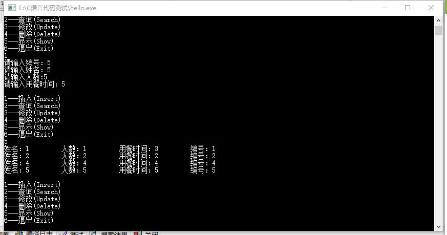

#include "stdio.h"
#include "stdlib.h"
#define MaxSize 20
typedef struct guest_info
{
char name[8];
int sum;
char time[10];
int number;
struct guest_info *next;
} GuestLink,*Pointer;
void Insert(Pointer *Head);
void Search(Pointer Head);
void Update(Pointer Head);
void Delete(Pointer *Head);
void Show(Pointer Head);
int main()
{
FILE *fp;
if((fp=fopen("d:\\message.txt","wb"))==NULL)
{printf("\ncannot open file\n");
exit(1);
}
Pointer Head=NULL;
int i;
do
{
printf("\n");
printf("1---插入(Insert)\n");
printf("2---查询(Search)\n");
printf("3---修改(Update)\n");
printf("4---删除(Delete)\n");
printf("5---显示(Show)\n");
printf("6---退出(Exit)\n");
scanf("%d",&i);
switch(i)
{ case 1:Insert(&Head);break;
case 2:Search(Head);break;
case 3:Update(Head);break;
case 4:Delete(&Head);break;
case 5:Show(Head);break;
case 6: break;
default :printf("错误选择！请重选");break;
}
}while(i!=6);
if((fwrite(Head,sizeof(GuestLink),MaxSize,fp)!=MaxSize))
printf("file write error\n");
fclose(fp);
return 0;
return 0;
}
void Insert(Pointer *Head)
{
int in_number;
Pointer p,q,r;
printf("请输入编号：");
scanf("%d",&in_number);
p=q=*Head;
while(p!=NULL)
{
if(p->number==in_number)
{printf("已经有相同的编号：");
return ;
}
else {q=p;p=p->next;
}
}
r=(Pointer)malloc(sizeof(GuestLink));
r->next=NULL;
if(r==NULL)
{printf("分配内存失败！");return ;
}
if(q==NULL)
*Head=r;
else {q->next=r;}
r->number=in_number;
printf("请输入姓名：");
scanf("%s",&r->name);
printf("请输入人数:");
scanf("%d",&r->sum);
printf("请输入用餐时间：");
scanf("%s",&r->time);
}
void Search(Pointer Head)
{
int flag=1;
int number;
Pointer p;
printf("请输入要查寻的编号：");
scanf("%d",&number);
p=Head;
while(p!=NULL&&flag)
{if(p->number==number)
{printf("姓名：%s",p->name);
printf("人数：%d",p->sum);
printf("用餐时间：%s",p->time);
flag=0;
}
else p=p->next;
}
if(flag)
printf("没有查询到！！");
}
void Update(Pointer Head)
{
int flag=1;
int number;
Pointer p;
printf("请输入要修改的编号：");
scanf("%d",&number);
p=Head;
while(p!=NULL&&flag)
{if(p->number==number)
{
printf("请输入用餐时间：");
scanf("%s",p->time) ;
// printf("请输入人数：");
// scanf("%d",p->sum);
flag=0;
}
else p=p->next;
}
if(flag)
printf("没有找到要修改的数据！！");
}
void Delete(Pointer *Head)
{
int flag=1;
int number;
Pointer p,q;
printf("请输入要删除的记录编号：");
scanf("%d",&number);
p=q=*Head;
while(p!=NULL&&flag)
{
if(p->number==number)
{
if(p==*Head)
{*Head=p->next;free(p);
}
else
{q->next=p->next;free(p);
}
flag=0;
}
else {p=q;p->next;}
}if(flag)
printf("没有找到可以删除的数据！！");
}
void Show(Pointer Head)
{
Pointer p;
p=Head;
while(p!=NULL)
{
printf("姓名：%-10s",p->name);
printf("人数：%-10d",p->sum);
printf("用餐时间：%-10s",p->time);
printf("编号：%-10d\n",p->number);
p=p->next;
}
}
该系统完成的功能主要有就餐姓名、就餐人数、就餐时间以及就餐编号的增删改查；
通过定义结构体实现就餐信息的操作；并在结构体中定义了指针变量用来顺序连接下一个信息；主要通过模仿数据结构中的链表操作；
来达到功能的实现；
